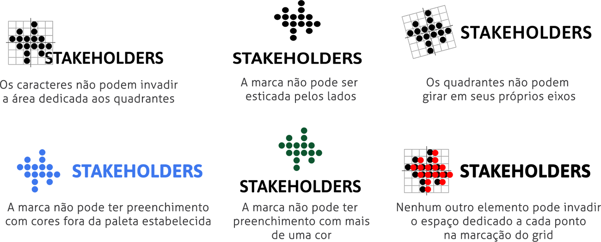

O que somos?
O Stakeholders é uma rede colaborativa
criada para melhorar e facilitar a
navegação na web para deficientes visuais.

Pra quem?
A plataforma se destina principalmente a
deficientes visuais que são impossibilitados de navegar na web por conta da não acessibilidade das plaformas.
Também podem participar pessoas
interessadas em atuar em projetos que
visam tornar a web um local cada vez mais acessível.
Como funciona?
Criamos e compartilhamos scripts de automação para o Google Chrome.
Onde posso usar?
Pode ser usado em qualquer computador,
desde que tenha acesso à internet.
Apesar de sermos uma ferramenta online,
sempre teremos colaboradores à sua
disposição, onde você estiver.
Nossos valores
 Inclusão Digital
Inclusão Digital
Direção Artística
 André Agacy
@agacyandre
André Agacy
@agacyandre
 Erisson Nunes
@erissonnunes
Erisson Nunes
@erissonnunes
 Juliana Sousa
@JulianaSBarreto
Juliana Sousa
@JulianaSBarreto
 Maria Carolina
@mcarolinabm
Maria Carolina
@mcarolinabm
Marca
Conseito de Criação
"Facilitar a adaptação através da colaboração."
Construção da Marca
A nossa ideia para o logotipo, partiu da representação de signos que remetessem ao nosso publico alvo, como o Braille, as ondas sonoras e um grupo de pessoas.
Também contruímos um grid 6x6 com pontos com cores monocromáticas, optamos por preto e branco.
Fizemos uma subdivisão em 4 quadrantes no grid e onde o Quadrante 1 tem que ser inverso ao quadrante 3, o mesmo vale para os quadrantes 2 e 4.
Variações da Marca
Como nossa marca é versátil, criamos mais algumas possibilidades de nos reconhecerem visualmente pela nopssa marca.
Criamos mais 5 variações de símbolos, sendo uma delas a nossa preferencial, comforme indicado ao lado, mas todas podem ser aplicadas para um mesmo contexto.

Área de proteção
Para manter a visibilidade e proteção dos elementos da marca precisamos garatir um espaço mínimo pra marca em relação a outros elementos, conforme indicado ao lado
Usamos de refêrencia o ponto que está em nosso símbolo.
Limite de redução
O tamanho mínimo pra aplicação da marca em sua verção horizontal e vertical, devemos indicar as proporçoes indicadas ao lado

Elementos de Apoio
Tipografia
Atipografia é indispensável para expressarmos os nossos valores e como queremos falar.
Nós adotamos a tipografia "Asap Semibold" e para a nossa logo é "Aller" para os demais textos por ser versátil e conter uma grande família.

Cores e Gradientes
Escolhemos adotar cores que apresentam contrate e que são de fácil interpretação para quem é portador de algum tipo de daltonismo, como: a deuteranopia, tritanopia ou protanopia.

Grafismos
Como somos versáteis, decidimos brincar com os nossos símbolos e a identidade visual.

Aplicações
Marca em fundos sólidos

Marca em fundos irregulares

Restriçoes da marca
Sound Branding
Somos uma marca empática, que procura ser sempre objetiva e direta. Tendo isso em mente, temos a missão de sermos diferentes das vozes mecânicas que algumas tecnologias ainda utilizam, queremos ficar mais próximos de você.
Utilizamos um tom de voz mais humanizado e jovial, falando sempre a linguagem do dia a dia, procurando escrever e falar de um jeito fácil, bem parecido com algumas assistentes virtuais que já existem no mercado.
Nós somos sempre políticos e simpáticos, além de nos preocuparmos em tornar a internet um local acessível à todos.
Usamos “nós” e “a gente” no nosso discurso para falar ao mesmo tempo do Stakeholders, da nossa equipe e das pessoas que nos cercam, incluindo sempre você no nosso diálogo. Queremos fazer parte de suas vidas.